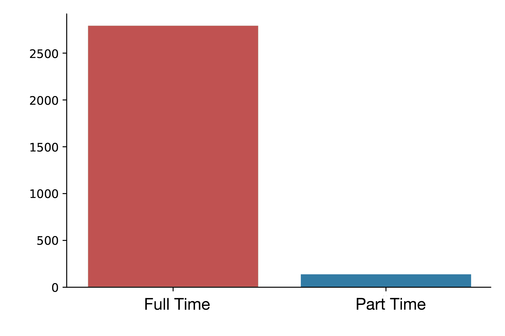
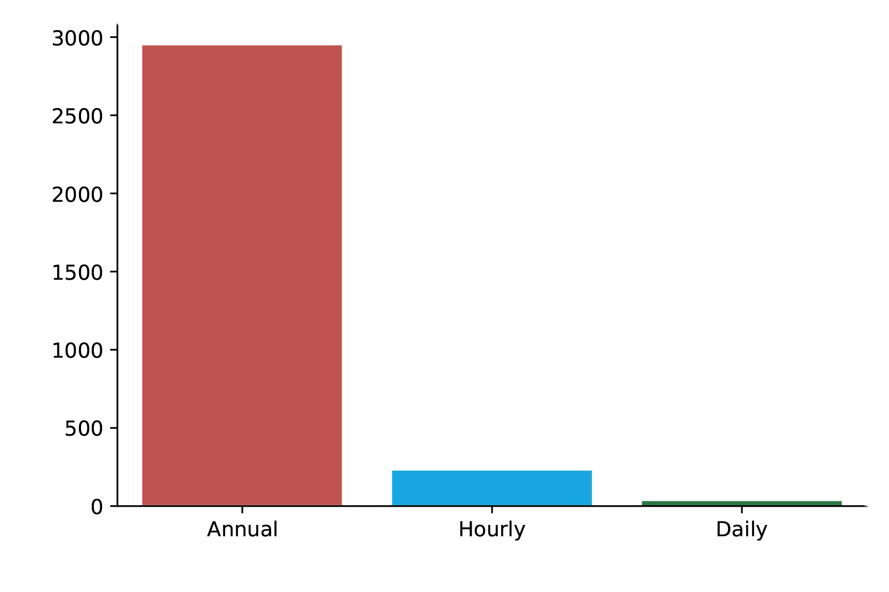

New York City posts offical internal and external jobs on its website. Meanwhile, NYC Open Data maintain a database of all the posting jobs.
The latest dataset shows that the job category the city desire the most is in architecture.
Meanwhile, the city decides to pay the highest hourly salary to medical specialists.
Working Hours and Salary Frequency
Most of the posted jobs are full time jobs. According to the data, 2793 out of 3207 jobs are full-time jobs, taking 87 percent of the whole list.
Full-time VS Part-time

Sources: NYC Open Data
According to the data, over 90 percent of the jobs are paid on annual salary base. There are also a small amount of works are paid hourly and daily.
Salary Frequency

Sources: NYC Open Data